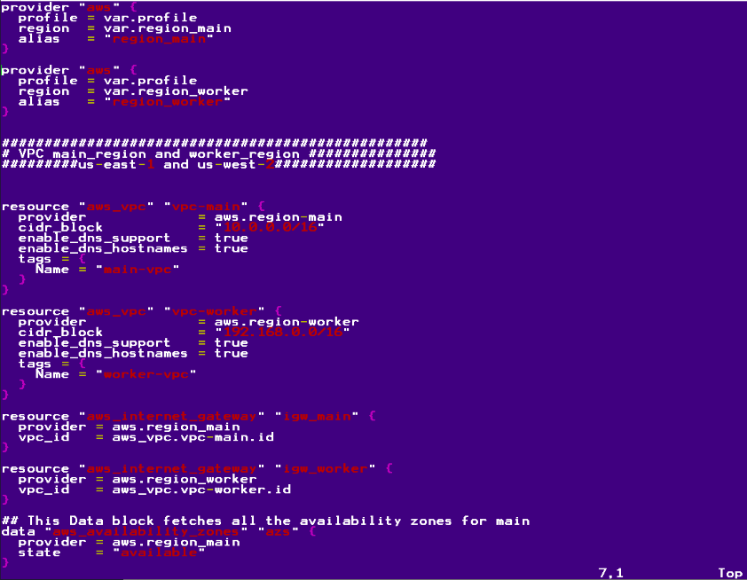

<div id="ajax-page" class="ajax-page-content">
    <div class="ajax-page-wrapper">
        <div class="ajax-page-nav">
            <div class="nav-item ajax-page-prev-next">
                <a class="ajax-page-load" href="portfolio-5.html"><i class="zmdi zmdi-chevron-left"></i></a>
                <a class="ajax-page-load" href="portfolio-2.html"><i class="zmdi zmdi-chevron-right"></i></a>
            </div>
            <div class="nav-item ajax-page-close-button">
                <a id="ajax-page-close-button" href="#"><i class="zmdi zmdi-close"></i></a>
            </div>
        </div>

        <div class="ajax-page-title">
            <h1>Deploying AWS EC2 instances with Terraform</h1>
        </div>

        <div class="row">
            <div class="col-sm-7 col-md-7 portfolio-block">
                <div class="owl-carousel portfolio-page-carousel">
                    <div class="item">
                        
                    </div>
                    <div class="item">
                        
                    </div>
                    <div class="item">
                        
                    </div>
                </div>

                
                <!--
                <div class="portfolio-page-image">
                    
                </div>
                -->

                <script type="text/javascript">
                    jQuery(document).ready(function($){

                        $('.portfolio-page-carousel').owlCarousel({
                            smartSpeed:1200,
                            items: 1,
                            loop: true,
                            dots: true,
                            nav: true,
                            navText: false,
                            margin: 10
                        });

                    });
                </script>
            </div>

            <div class="col-sm-5 col-md-5 portfolio-block">
                <!-- Project Description -->
                <div class="block-title">
                    <h3>Description</h3>
                </div>
                <ul class="project-general-info">
                    <li><p><i class="fa fa-user"></i> Aubre Body</p></li>
                    <li><p><i class="fa fa-globe"></i> <a href="https://github.com/AubbsDev21/Terraform_AWS_EC2" target="_blank">GitHub Repo</a></p></li>
                    <li><p><i class="fa fa-calendar"></i> 25, January 2021</p></li>
                </ul>
  
                <p class="text-justify">This is a Terraform Project that demonstrates using Terraform for building and deploying AWS resources. In this project by using the <bold>module</bold> block allows me to reuse resources for scaling in the future.  </p>
                <!-- /Project Description -->

                <!-- Technology -->
                <div class="tags-block">
                    <div class="block-title">
                        <h3>Technology</h3>
                    </div>
                    <ul class="tags">
                        <li><a>Linux</a></li>
                        <li><a>Terraform</a></li>
                        <li><a>DevOps</a></li>
                        <li><a>AWS EC2</a></li>
                        <li><a>AWS Networking</a></li>
                    </ul>
                </div>
                <!-- /Technology -->

               
            </div>
        </div>
    </div>
</div>
